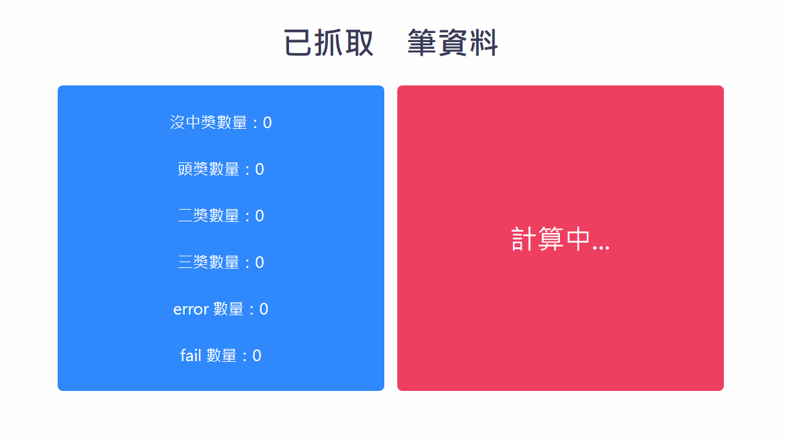
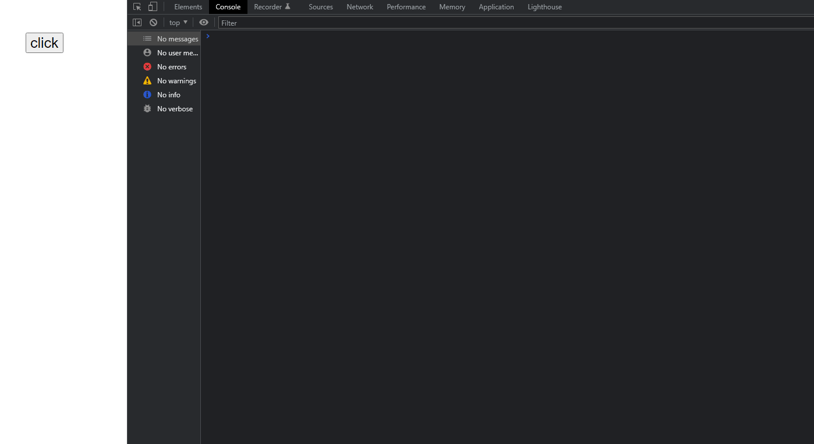
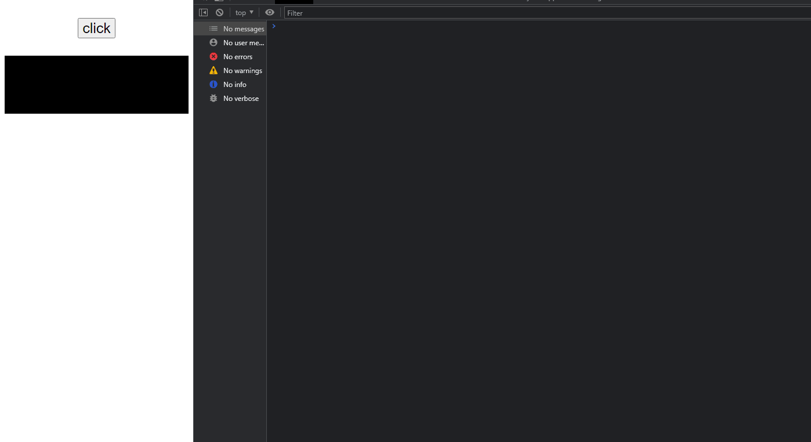
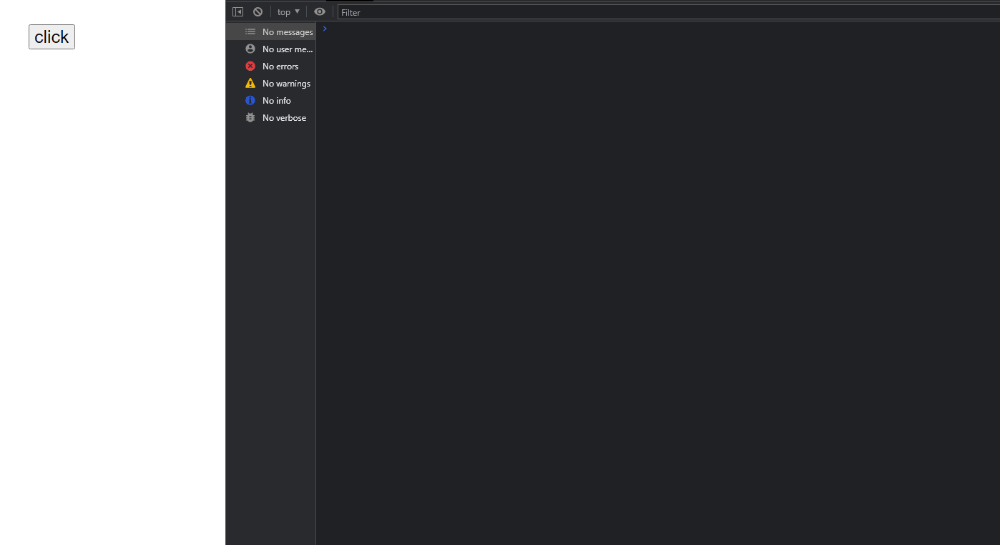

真的有夠鬧。
來龍去脈 這個錯誤是來自「程式導師實驗計畫第五期」week8 的進階挑戰題 。
原本我是想做出「每抓到一筆資料就更新 DOM 來顯示獎品數量」，像這樣：

但我犯了一個很蠢的錯誤，就是把 XMLHttpRequest.send() 的第三個參數（async）寫錯，讓每一次 request 都變成「同步」的，所以就得到了滿滿的「block（堵塞）」，也體會到了 you can’t do anything, because it’s stuck. 這句話的內涵。
原始碼：
（有興趣的人可以直接貼到 console 去跑跑看）
1 2 3 4 5 6 7 8 9 10 11 12 13 14 15 16 17 18 19 20 21 22 23 24 25 26 27 28 29 30 31 32 33 34 35 36 37 38 39 40 41 42 43 44 45 46 47 48 49 50 51 52 53 54 55 56 57 58 59 60 61 62 63 64 65 66 67 68 69 const button = document .querySelector('button' )button.addEventListener('click' , () => console .log('click' )) let total = 1000 let counter = 1 function handler ( counter++ if (request.status >= 200 && request.status < 400 ) { const { prize, error=null } = JSON .parse(request.responseText) if (error) { console .log(error) } switch (prize) { case 'NONE' : console .log(prize) break case 'FIRST' : console .log(prize) break case 'SECOND' : console .log(prize) break case 'THIRD' : console .log(prize) break } } else { console .log('500' ) } if (counter <= total) { request.open( 'GET' , 'https://dvwhnbka7d.execute-api.us-east-1.amazonaws.com/default/lottery' , false ) request.send() } } const request = new XMLHttpRequest()request.addEventListener('load' , handler) request.open( 'GET' , 'https://dvwhnbka7d.execute-api.us-east-1.amazonaws.com/default/lottery' , false ) request.send() console .log('sync' )
輸出：

可以注意到 click 跟 sync 會等到「所有的 request」結束後才被執行到。
當時為了找出原因，我還試著用 setTimeout 來模擬一段非同步操作。
原始碼：
1 2 3 4 5 6 7 8 9 10 11 12 13 14 15 16 17 18 let total = 1000 let counter = 1 function handler ( div.innerText = counter++ if (counter <= total) { setTimeout (handler, 100 ) } } setTimeout (handler, 100 )
輸出：

這下我更亂了，明明兩個的邏輯是一樣的卻有不同的行為？
後來我試著用 debugger 來看到底哪裡出了問題，但還是沒找出來。直到最後在 starkoverflow 的 XMLHttpRequest in for loop 才發現：
靠北，原來是我寫錯參數。
所以把只要把參數改掉，一切就正常了：
原始碼：
1 2 3 4 5 6 7 8 9 10 11 12 13 14 15 16 17 18 19 20 21 22 23 24 25 26 27 28 29 30 31 32 33 34 35 36 37 38 39 40 41 42 43 44 45 46 47 48 49 50 51 52 53 54 55 56 57 58 59 60 61 62 63 64 65 66 67 68 69 70 71 72 73 74 75 const button = document .querySelector('button' )button.addEventListener('click' , () => console .log('click' )) let total = 1000 let counter = 1 function handler ( counter++ if (request.status >= 200 && request.status < 400 ) { const { prize, error=null } = JSON .parse(request.responseText) if (error) { console .log(error) } switch (prize) { case 'NONE' : console .log(prize) break case 'FIRST' : console .log(prize) break case 'SECOND' : console .log(prize) break case 'THIRD' : console .log(prize) break } } else { console .log('500' ) } if (counter <= total) { request.open( 'GET' , 'https://dvwhnbka7d.execute-api.us-east-1.amazonaws.com/default/lottery' , true ) request.send() } } const request = new XMLHttpRequest()request.addEventListener('load' , handler) request.open( 'GET' , 'https://dvwhnbka7d.execute-api.us-east-1.amazonaws.com/default/lottery' , true ) request.send() console .log('sync' )
輸出：

現在一開始 sync 就會被執行，而且 click 也能正常執行，不會有像剛剛「block」的情況發生。
後記 雖然搞了場烏龍，但我們可以從中學到一點東西，因此我花了些時間來分析這兩者實際上的執行流程。
在同步的情況時：
簡單來說，用來處理 response 的 handler 都會去執行下一個 request：request.send()
所以第一個 request.send 會一直等一直等，等到最後的 request 被解決完，在「遞迴」到最一開始的原點。但是在那之前會先得到 Maximum call stack 的錯誤。（佔太多空間啦）
在非同步的情況時：
這裡最大的特點是，每當 Call stack 中執行到「非同步」時，就會像圖中那樣直接丟到「Web API」讓瀏覽器去處理，此時 Call stack 就「空出位置」能夠執行其他的程式碼。（這也是為什麼 sync 跟 click 可以正常執行）
另外每一次 handler 在執行下一個 request 的時候，因為是非同步，所以 request 會直接被丟到 Web API 處理，而 handler 就執行結束了，不會像同步的情況一直「堆疊」。